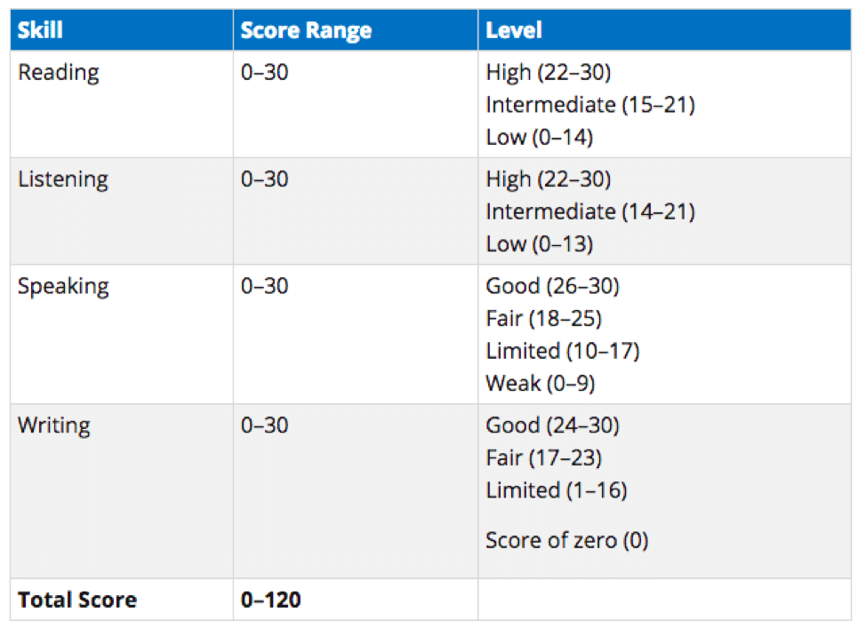

Blogpost About TOEFL
April 25,2020
What is TOEFL?
TOEFL is an acronym of the Test of English as a Foreign Language, which is the official name for the test. It assesses your ability to both speak and understand English by analysing your English ability in terms of reading, speaking, listening and writing. These are all skills which will be needed to carry out your academic studies and the test is used by institutions to ensure students are able to proceed and succeed on their chosen course in a country where the curriculum is taught in English.
Who needs to take a TOEFL test?
The TOEFL test has been taken by over 27 million people worldwide to ensure their English ability is adequate. The test is often taken by students who are planning to study at a university abroad and scholarship candidates, along with students and workers who are applying for visas and English-language learners tracking their English progress. Keep an eye out on the requirements for university courses, as it will be stated there whether you are required to take the TOEFL and the minimum grade required to apply for the course.
Why take a TOEFL test?
Educational institutions and governmental agencies in over 130 countries accept TOEFL scores when considering applications for certain positions or courses. As an admission requirement, you may find that some courses require a minimum TOEFL score which will allow you to proceed onto the course alongside the regular course requirements. Minimum score requirements can range between 61 and 100 depending on the institution and course. The result you receive in your TOEFL test will only be valid for two years, after those two years they are no longer recorded, so if you’re looking to apply to study abroad after this time, you will have to sit the test again. It is important to ensure you take the test in time for your application if the result is part of the requirements; if you are only studying a course which lasts a year the same TOEFL results could be used to improve your opportunities for work in a foreign country also.